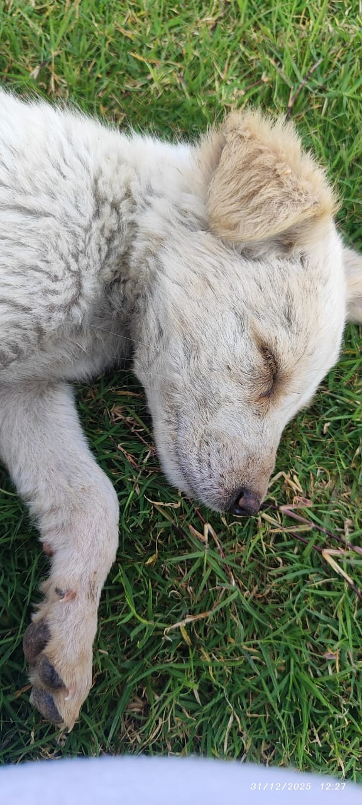
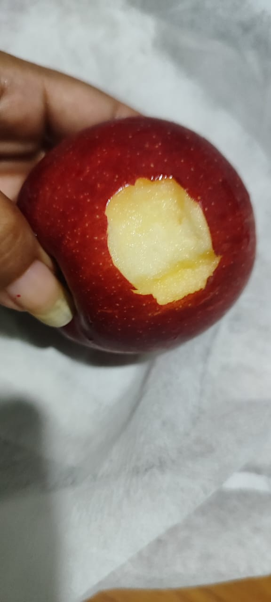

इसमें उसकी यादें हैं...पछतावा है...or adhurapan है...किसी ऐसे इंसान की कमी है...जो कभी मेरी ज़िंदगी का बड़ा हिस्सा था. 😒
Dil की बात किसी को बतानी थी... सुनने वाला कोई nahi hai... रात में.. Insta khola...किसी के इतजार में...शायद मेरे कहने पे vo ऑनलाइन aa जाये.. फिर yaad आया की.. वो to nahi आने वाली.... मोबाइल side kiya और सोने की कोशिश की..🥺
तुम्हारे sath.. 🥺दारू पीना tha... Apne style me..सपना ही रह गया...vo हल्दी or शहद का test आज भी मुझे yaad hai.. ☺️
Jab tum पहले कपडे धोती थी.. बीमार padi.. to मन kiya मैं aakar तुम्हरी help कर दूँ... मैं खुद भी thik नहीं था...फिर भी किसी तरह तुम्हारे pass आना चाहता था... बस तुम्हारी permission चाहिए थी..फिर yaad आया... एक बार tumhari गली तक आया था...लेकिन तुम मिलने नहीं आई थीं..☺️
तुम्हारे साथ..दुबारा...उस घास वाले मैदान में फिर से बैठने का मन करता है...🥺 वो dog जों तुम्हारे पैरों में जा के सो जाता tha....जिसके लिए तुम रो रही थी... जब vo नहीं बच पाया था.. Tumko रोते देखा था... आज भी लगता है...काश तुम्हारे लिए कुछ कर पाता...तुम्हारे लिए...खरीद लेता उस dog को /लड़ लेता उसके मालिक से... Nahi कर पाया अफ़सोस होता hai...

वो एक cold drink..को साथ में पीना.... mujh se नाराज़ होकर भी तुम्हारा मुझे खाना खिलाना...or वो घंटों बातें karna... सब kuch yaad आता hai...☺️ दुबारा से. उसी सपनों की दुनिया में जाना चाहता hun... But nind ही उड़ गई है...वही मेरी दुनिया थीं.😂

Proper एक स्पेशल day tha...Sunday... वो सिर्फ़ एक दिन नहीं था... हमारा दिन था... सब काम छोड़ के.. दोनो एक साथ. Time spend करतें थे...😮💨 अब वो दिन किसी को yaad नहीं..
वो tumhari Calls..जब मोबाइल तुम्हारे beg में on छोड़ जाती.... ऐसा लगता था... जैसे तुम मुझे अपने साथ हर जगह ले जाती हो...School..Class.. Church... तुम कितनी Busy रहती थीं... फिर भी kabhi feel नहीं होने दिया कि...मैं tum se दूर hun...☺️
वो खोई हुई Lipstick...मुझे लगा दिखाने के लिए तुम उसे kaise ढूंढ रही थी... तुमने use ढूढा.. Or लगा के dikhaya....वो Black Dress one pice... Or... Black साड़ी..... उसमे तुम बहुत अच्छी लग रही थी मुझे....आज भी याद hai...शायद वो last time tha जब तुमको देखा tha.... ☺️
मैंने एक बार तुमसे कहा tha मैं शादी के बाद भी loyal रहूँगा.. Nahi हो पायेगा मेरे से.. आज समझ आया... कुछ वादे वक्त से हार जाते हैं... 🥺
मुझे पता hai.. की kuch भी nahi हो सकता... वो हक मैं बहुत पहले खो चुका हूँ.. 🙂....दूरिया roj बढ़ रही hai... मैं दूर होता जा रहा हूं.. खुद से.. जहाँ मैं... मैं..nahi हूं... 🥺
aaj भी तेरी हर याद संभाल रखी है...may be तुम्हारे पास मेरी एक तस्वीर भी न हो..🙂
फ़र्क बस इतना है...
मैंने gujre हुए लम्हों को jindgi बना लिया..or.tum ne उन्हें बीता हुआ वक़्त समझकर छोड़ दिया... 😔
जो मेरे लिए Golden Days हैं...उसके लिए आज Irritation.🥺